Applications
AI belongs across field logistics and parcel workflows. Digital aliases are a separate application.
Concept renderings. The panel images on this page show intended use, not a deployed system.
Field logistics
Hand-mark bags, crates, pallets, and mixed goods; read or relay a code; connect it to existing identifiers. Then photograph loose items, prepare a turn-in, compare inventory, and use touch-first actions.

No-device items No-device marking on duffels and a crate. 
Obscured label 
Wrapped pallet Wrapped mixed-goods pallet with circled zz marker. 
Read Camera or manual entry. 
Link Code linked to NSN, document number, hand receipt, and photo. 
Report Radio cue and read-back: three code words. 
Photograph Loose or broken items; spoken note. 
Guide Confirmed item and handling choices. 
Review Prepared form and photos. 
Inventory assistant Same shelf across days; lower stock and proposed reorder. 
Touch first Drag an identified item to an action; offer voice input.
Postal and parcel
Write a reference directly on a parcel; photograph loose items and receive packing guidance before choosing a parcel code.

Postal and parcel Handwritten code on a parcel beside the address. 
Pack and ship Guitar and appliance packing guidance; handwritten zz parcel code.
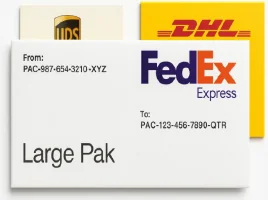
Concept illustrationOne super identifier Carrier labels that can carry one zz-Code ID.
By appending a single 'super identifier' to legacy systems, we create a unified data node system to give current analog logistics the new digital-smart AI solutions and network. In the above, in theory, a FedEx overnight shipper can only put the zz-Code ID on the package and its deliverer in the fulfillment chain in anonymous, until the final touch with the receiver.
End-to-end anonymous concept use cases
The merchant never receives the customer's personal data or payment details, only a zz-code and a security code. Nothing personal appears on the outside of the package. The customer picks it up at a drop-off store by giving a secret code or signing with a private key.
Concept illustrations. These panels show intended use, not a deployed system.
Step 1Anonymous customer orders online Purchase: Customer selects reduced-exposure delivery. 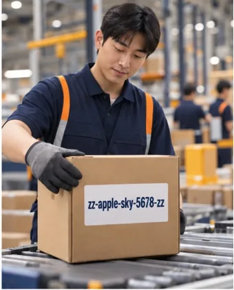
Step 2Merchant ships only with the zz-Code Fulfillment: The parcel displays only a shipment reference. Step 3Delivery man only knows drop-off address Last mile: The assigned courier receives task-limited address access. Step 4Anonymous customer gives matching secret code or signature Pickup: A private credential authorizes release at a secure pickup point.
This is an example of end-to-end anonymous delivery to a drop store and anonymous pickup. The receiver would pick up by identification using private-key to the package’s public key.
This reduces potential for customer data breach by keeping customer information including payment account from the merchants’ applications.
Everyday and community
A handwritten code on a lost-cat flyer or other public surface can lead to a useful page.

Concept illustrationEveryday and community Lost-cat flyer with handwritten code.
Concept illustrations. These panels show intended use, not a deployed system.
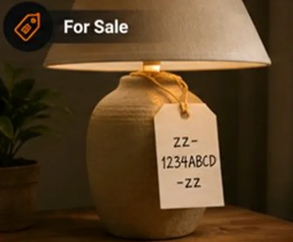
For sale A zz-code attached to a lamp (object) for sale. 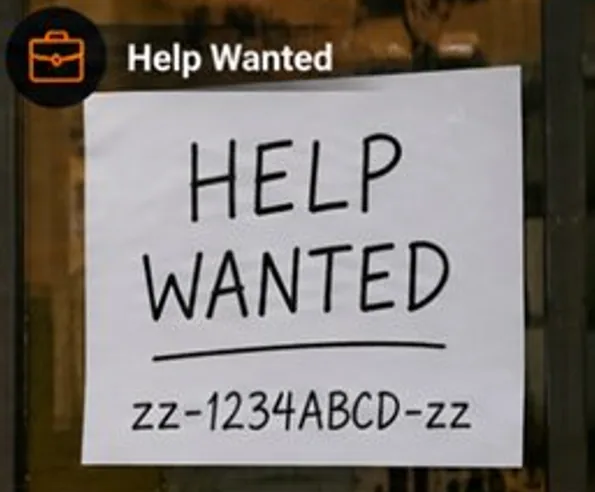
Help wanted A help wanted sign with the zz-code. 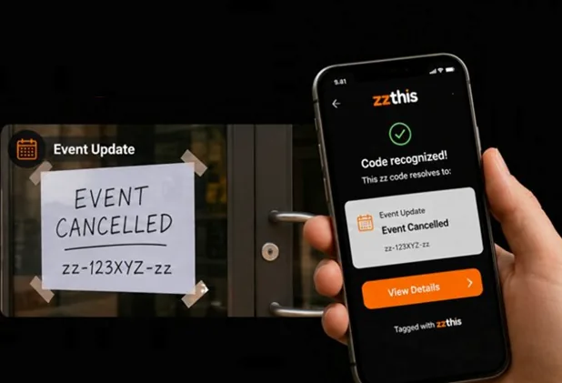
Event cancelled An “Event Cancelled” sign with the zz-code.
Concept illustrations. These panels show intended use, not a deployed system.
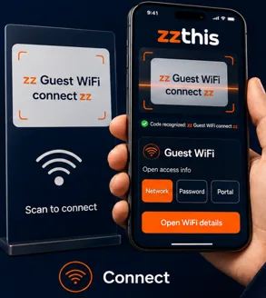
Connect A sign code opens guest Wi-Fi details. 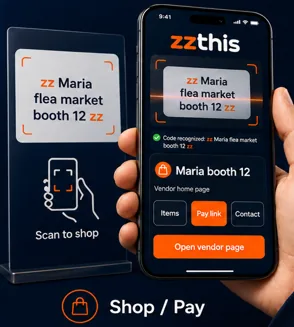
Shop / Pay A booth code opens the vendor page. 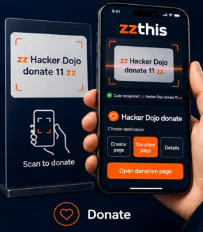
Donate A sign code opens a donation page.
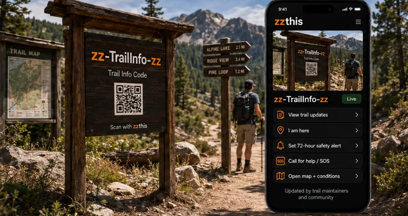
Concept illustrationTrail marker A trail marker tags in the park that visitors can scan and update with their posts, etc.
Concept illustrations. These panels show intended use, not a deployed system.
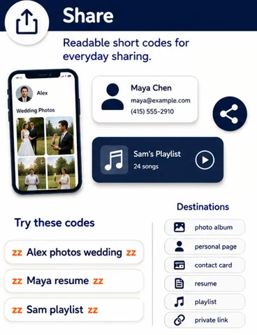
Share Wedding photos and other everyday sharing with a zz-code. 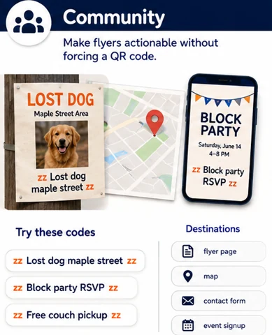
Community Lost dog and block party signs with a zz-code. 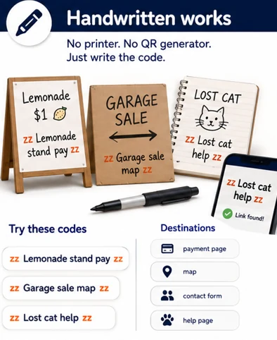
Handwritten works Lemonade stand and lost cat signs with a zz-code.
Businesses
Businesses can convert their product names with the scannable zz-Codes.
Real photos.
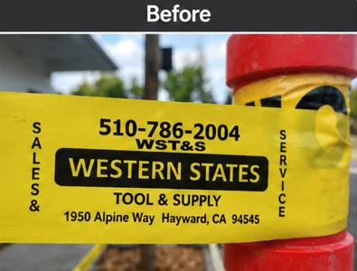
Before: product tape with a phone number. 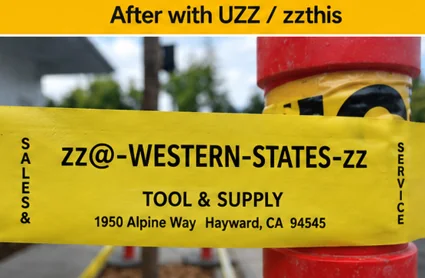
After: the same tape with a scannable zz-Code.
A commercial moving truck signage has a zz mark added to it, and people can scan it for the information.
Real photos.
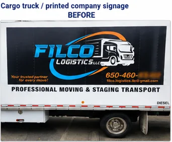
Before: printed company signage on a cargo truck. 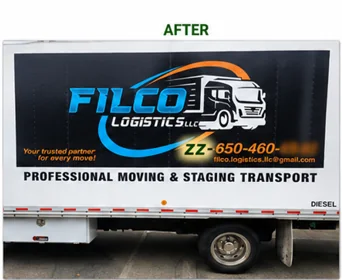
After: a zz mark added so people can scan it for the information.
Digital aliases
A short human-readable code can stand in for a long machine address used by software agents.
Deeper blockchain/AI architecture can grow into a later page.

Concept illustrationDigital aliases Short agent alias standing in for a long machine address.
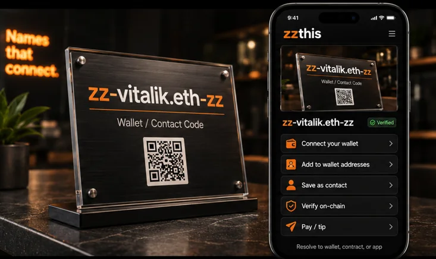
Concept illustrationWallet address An Ethereum ENS address being scanned by a wallet with a zzThis function.